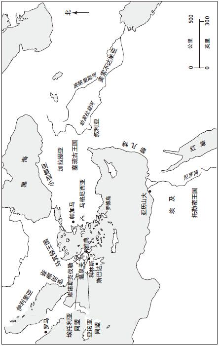
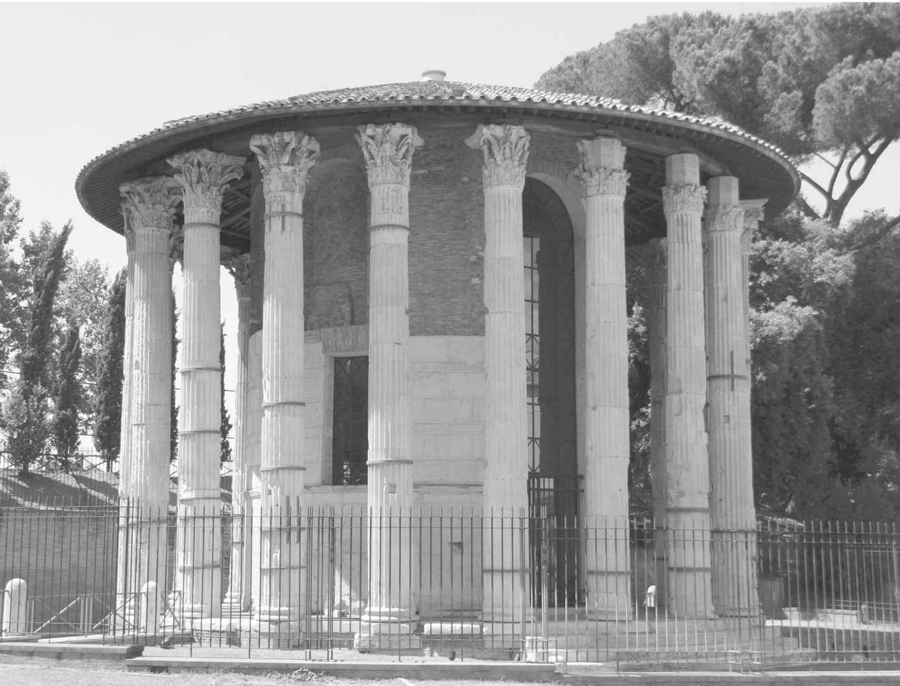

战胜迦太基让罗马成为西部地中海的领头羊。第一次布匿战争及随后的胜利确保了罗马对西西里和撒丁尼亚的控制权。第二次布匿战争将罗马的影响力延伸至北非和西班牙。直到公元前146年，罗马才在北非建立了第一个行省。不过西西里和撒丁尼亚分别在公元前241年和前243年就已成为罗马的直属辖区。近西班牙行省和远西班牙行省均成立于公元前197年。罗马通过其政治、军事和经济上的优势对行省疆界以外地区施加压力。在地中海西部依然有抵抗罗马霸权的民族存在，而罗马军队则对西班牙的敌对部落以及随后兴起于高卢地区的凯尔特诸民族不断征伐。不过，在战胜迦太基后，西方已没有能够给罗马统治构成直接威胁的对手存在。
然而，传统上古代地中海权力的中心地带却位于东部地区。到公元前200年，希腊城邦的光辉岁月已湮灭在历史中，但希腊语言和文化依然是衡量文明的一把标尺。被亚历山大征服后，东地中海分裂为众多的王国、联盟和城市，它们的数量也一直处于变动之中。公元前2世纪期间，罗马成为复杂的希腊化世界中的主导力量。对希腊文化的仰慕为罗马带来了一种全新的优雅趣味，即便罗马军队击溃了那些试图寻求保存希腊自由的城邦。而罗马对东方的征服又为日益紧张的罗马共和国肌体带来新的压力。

地图6 罗马和东地中海
亚历山大大帝在公元前323年去世，将其通过征服得来的庞大领土留给了“最强者”。他的将领们为争夺控制权进行的战争很快使帝国分崩离析。到公元前3世纪末，出现了三大王国：安提柯王朝治下的马其顿，塞琉古王朝治下的叙利亚，以及托勒密埃及。希腊自身则被同盟城市组成的联盟操纵，主要是科林斯湾北部的埃托利亚联盟和伯罗奔尼撒内的亚该亚联盟。少数城市依然保持独立，其中包括斯巴达和雅典，但它们在政治上的重要性已变得微乎其微。其他的城市包括以贸易为主的罗德岛和亚细亚的帕加马王国。正如整部希腊历史证实的那样，不同城邦都成为战争和同盟形成的一个不断变换网络的一部分，而罗马则几乎是毫无准备地步入其中。
从军事和政治实力而言，在上述国家中，几乎没有哪个能以任何方式和罗马抗衡。然而，对罗马而言，希腊东方拥有更加重要的地位。希腊文化已统治地中海长达数世纪，而希腊人则被认为是文明的仲裁者。罗马并不想简单地以武力征服希腊。他们希望希腊人接纳罗马成为文明世界的一部分，而不是将其视作野蛮人（barbaroi ）。渴望获得希腊人的尊敬给罗马介入希腊事务造成了深远的影响。与此同时，罗马共和国依然是一个由极具野心的元老精英所领导的带有侵略性的帝国霸权。结果便是，这些张力引发了漫长、间或带有悲剧色彩的一系列事件，最终将东地中海置于罗马统治之下。
罗马和位于东地中海的希腊文化之间的直接对话最早发生在公元前3世纪初皮洛士入侵意大利时期。在经过一番武力的洗礼后，罗马又面临来自迦太基更为紧迫的威胁，因而不得不开始慢慢将目光转向东方。罗马人渡过亚得里亚海向东方的进军发生在两次布匿战争之间，且活动范围仅限伊利里亚海岸一带。即便如此，这一举动还是引起了马其顿国王腓力五世的注意。腓力决意对侵入自身势力范围的罗马人进行抵抗，因此在坎尼会战后和汉尼拔签订了合作条约。他并没有直接援助迦太基，而所谓的“第一次马其顿战争”也在公元前205年议和的局面下结束，但罗马并未忘记或饶恕马其顿国王。公元前202年，迦太基战败。公元前200年，罗马向马其顿宣战。
现在，我们有必要退回一步，考虑一下罗马人决定发起第二次马其顿战争的重要性。公元前200年，罗马及其盟友已被旷日持久的战争耗得筋疲力尽。第二次布匿战争结束时距扎马战役也仅两年之久。但罗马故意选择在亚历山大大帝的故土上挑起冲突，事出何因？寻求复仇当然是一个因素，这就像为了抵抗马其顿可能发起的进攻而进行自卫的借口一样。罗马同样也面临着给同盟者一方提供支持的压力，后者不仅包括意大利，也包括希腊，在那里有大量城市都曾向罗马发出过援助请求。另外，还需记住的一点是，罗马渴望获得希腊人的认可。所以当希腊处于罗马保护之下时，罗马要求腓力从希腊撤军。然而，尽管存在上述动机，罗马人并不想开战。公元前200年召开的百人大会拒绝对执政官发出的宣战请求给予支持，此种情况几乎在罗马历史上仅发生过这一次。很快，公民大会再次召开以试着改变最初的决定，但罗马人的犹豫表明了精英阶层内部存在一个利益集团，最主要的成员是某些在职的高级官员。这些人事实上是希望采取军事行动的。只有通过战争，他们才能赶超西庇阿·阿非利加努斯，获得地位和荣耀，而这是由竞争精神的需求决定的。
希腊人欢迎罗马军团的到来。埃托利亚和亚该亚联盟团结在了罗马的背后。然而，战争过程并非一帆风顺。马其顿王国实力强大，因此罗马军队在战争初期获得的胜利有限。就像第二次布匿战争期间任命西庇阿一样，解决之道是选出一位有能力的将领，即便这一做法有违罗马传统。公元前198年，提图斯·昆克提乌斯·弗拉米尼努斯当选执政官。他是个亲希腊者，热爱希腊文化并能说一口流利的希腊语。因此，弗拉米尼努斯就成了获得希腊支持并提升罗马文明形象的完美之选。但当时他只有30岁出头，且在此前仅担任过财务官一职。然而，西庇阿的政治履历已经为破坏罗马共和制度开了先例。
弗拉米尼努斯有着良好的文化修养。但作为一名罗马贵族，他同样渴望获得军事荣耀。在公元前197年的库诺斯克伐勒战役中，腓力最终被击败。在世界古代军事史中，库诺斯克伐勒一役证明了军队后防线变更的必要性。经西庇阿之手发展起来的灵活军团阵型被证明优于刻板的马其顿方阵。腓力从希腊撤军，而此时每个人都屏住呼吸等待罗马的裁决。最终，在公元前196年于科林斯召开的地峡运动会上，罗马做出了决定。面对来自希腊各城邦的众多代表，弗拉米尼努斯喊出了“希腊自由”的口号。
根据普鲁塔克《弗拉米尼努斯传》中的记载，话音一落，人群欢呼声之响亮竟将盘旋于头顶的乌鸦震地而死。希腊人甚至将弗拉米尼努斯当作神一样敬拜。这是第一个罗马贵族受到如此敬拜，对他的祭拜仪式甚至一直延续到三个多世纪后的普鲁塔克时代。
“自由”已作为政治宣传的主题之一贯穿人类历史。该词在希腊世界拥有特别的回响。在希腊，个体城邦为实现自治进行了长期的斗争，而亚历山大后的希腊化国王对这一理念始终抱有阳奉阴违的态度。罗马也是一样，但不同之处在于罗马人履行了他们的承诺。公元前194年，驻扎在希腊东方世界的全部罗马军队撤离。罗马在希腊不驻军队，不征赋税，不设行省。这在某种程度上是罗马实用主义的一个体现。罗马共和国既不依靠常备军，也不动用官僚体制对希腊实施直接统治。但罗马的克制同样体现出他们对希腊人及其文化的某种敬仰，罗马从未带着这份敬意对待那些地中海西部的邻族。整个公元前2世纪，为了追求军事荣耀和劫掠财富，罗马军队在西班牙进行了一系列战争，充满了血腥、毁灭和背叛。当时的西班牙恰如罗马治下的“越南”。相比之下，在东部希腊地区，罗马最初更多地依赖外交手段进行治理。这并不是说从没有暴行发生，当罗马人的权力遭受威胁时，他们就会变得残酷无情。然而，罗马不太情愿对这一地区施行直接统治。罗马人必须表现得更“文明”些，因为他们很在乎希腊人的看法。
尽管撤走了军团，公元前196年的宣言表明罗马仍将希腊置于自己的保护之下。而这无疑对希腊化国王中最富声望的那位人物构成了直接挑战，他就是塞琉古叙利亚的安条克三世。安条克是个具有扩张野心的统治者，其统治让罗马的盟友帕加马和罗德岛噤若寒蝉。公元前195年，被迦太基流放的汉尼拔投奔安条克三世，这进一步使罗马人提高了警惕。在对罗马人“自由”口号日益不满的埃托利亚联盟的支持下，安条克于公元前191年侵入希腊。
罗马立即做出回应。在温泉关（公元前480年，斯巴达人在此地抵抗波斯人入侵），安条克的部队侧翼受到攻击而退回叙利亚。执政官卢修斯·科尔涅利乌斯·西庇阿一路追击。他的当选原因部分在于其兄弟西庇阿·阿非利加努斯答应助他一臂之力。安条克兵力在数量上是罗马人的两倍，但远不如罗马军队精锐。汉尼拔大材小用，被委派指挥海军舰队，而安条克所率领的部队则在公元前189年的马格尼西亚之战中被击溃。他所支付的15000塔伦特战争赔款甚至让扎马会战后迦太基人偿付的金额相形见绌。这也反映了获胜的罗马将领在东部世界获得的财富是多么惊人。罗马再次将军队从希腊撤离，但它对希腊和小亚细亚的统治已十分牢靠。安条克接受罗马人的命令而投降，但汉尼拔的行踪一直捉摸不定。直到公元前183年，他才在比提尼亚附近被弗拉米尼努斯发现。最终，他选择了服毒自杀，而未向罗马屈服。
此后的二十年里，在东方希腊世界，罗马延续了科林斯自由宣言以来的外交政策。没有罗马军队驻扎在东方希腊语区，罗马人也未在其领土上建立行省。自从罗马和位于“大希腊”的南意大利城市首次接触后，希腊对罗马人的生活产生了更为深远的影响。希腊艺术品涌入意大利，对罗马精英来说，希腊语言和文学等知识拥有新的重要性。配备希腊教师，不管他们是奴隶还是自由人身份，成了罗马贵族家庭的一个普遍特征。希腊和罗马文化的全新结合被创造出来，并受到以弗拉米尼努斯和西庇阿·阿非利加努斯为首的希腊文化爱好者的鼓励和追捧。
并非所有的罗马人都对希腊影响张开臂膀持欢迎态度。有些人将“爱希腊主义”（philhellenism）视作对罗马共和国传统美德和孔武气质的威胁。这些抨击者中最重要的一位是马尔库斯·波尔奇乌斯·老加图，此人在晚年拥护了灭亡迦太基的决策。加图自身绝非漠视希腊文化（正是他从侧翼发起进攻，在温泉关给予安条克以痛击，再次上演了三个多世纪前的希波战争策略），但他及其支持者认为希腊人不如罗马人，同时担心希腊文化的影响会腐蚀罗马人的价值观。在公元前155年，从雅典派出的由一群哲学家组成的使团来到罗马。其中的卡涅阿德斯是一名怀疑论者，同时，他也是柏拉图学院的校长，这时因为公开讲座而引发了一桩丑闻。在头天的讲座中，他为正义做了辩护，但次日又反驳了此前的言论。加图将该使团送回老家，以免罗马青年被其学说误导。这只是一个小插曲，却证明了罗马内部的紧张关系。加图同弗拉米尼努斯以及西庇阿之间的对立促使罗马在公元前170年代后对希腊事务采取更为强硬的政策。
或许罗马能做到对希腊文化保持敬意，但反过来，罗马人也希望希腊人认可其手中掌握的权力。希腊诸国可以“自由”地对其内部事务进行管理，正如罗马的意大利盟友所做的那样。然而，和那些罗马的同盟者一样，罗马希望希腊人能保持安静，未经许可之事不要去做。但希腊人却心思颇多。希腊世界的历史充满了风云变幻的敌对竞争和地方性冲突，这一点即便在罗马人到来后，依然没有改观。元老院发现自身总是处在一种困扰之下，即不断受理希望罗马介入调停希腊内部争吵的大量请求。饱受折磨的罗马人逐渐开始罔顾事实或正义，一味支持那些首先向其发出请求或更加符合罗马利益的申诉对象。
罗马所奉行的利己主义政策造成的主要牺牲者是马其顿的珀尔修斯—腓力五世之子及其王位继承人。由于罗马元老院对马其顿盯得很紧，珀尔修斯始终处于罗马元老院偏见性决策的伤害下。而东方的那些反对罗马介入希腊事务的势力则将珀尔修斯视为领袖。这样，在罗马人眼中，珀尔修斯就成了一个严重威胁。由于罗马在希腊没有驻军，不收贡赋，也未设行省政府，罗马对希腊施加的影响主要依赖于后者对其权力的认可。随着反罗马情绪逐渐高涨，这种认可也就渐渐不在了。这一后果导致了公元前172年第三次马其顿战争的爆发，罗马是战争的发起方。我们的两个主要史料来源，波利比阿和李维都表明罗马为入侵希腊的行径进行了强有力的正义性辩解，但很显然珀尔修斯并不想和罗马开战。事实上，珀尔修斯还赢得过两场小规模战斗。在这之后他立即表示愿意投降，并希望支付战争赔款。但罗马人拒绝了，马其顿人从此风光不再。公元前168年，珀尔修斯在彼得那战役中被彻底击败。马其顿君主制度被废除，其领地被划分为四个共和国，均需向罗马缴纳贡赋。
即便到此时，在东方，罗马依然缺乏吞并土地或建立行省的欲望。罗马真正想要的是确保自身权力重获认可。在马其顿灭亡后，这一意愿得到了强有力的执行。500名埃托利亚统治精英被斩首，还有1000名亚该亚人作为人质被送往意大利，其中就包括未来的历史学家波利比阿。在当年皮洛士统治的土地上生活的人境遇更加悲惨，有15万名民众被俘为奴。同时，帕加马和罗德岛的势力也遭到削弱。但最能够体现罗马霸权的生动例子却涉及一个具体的人物。当罗马将注意力移到他处时，叙利亚的安条克四世趁机入侵了托勒密埃及。在亚历山大附近，他受到了由盖乌斯·波皮利乌斯·拉埃纳斯率领的一个罗马使团的传唤。当安条克接到罗马元老院要求撤军的命令时，这位国王提出需要时间和他的顾问进行商讨决定。拉埃纳斯“用手里握着的权杖在地上绕国王画了一个圈，并说道：‘在你走出此圈之前，告诉我你的决定，以便呈报元老院’”（李维原话）。安条克只能向罗马的意旨屈服。
到公元前167年，已经没有一个希腊国家可以对罗马的权力提出质疑或挑战。作为人质，波利比阿在罗马完成了《通史》一书，并督促他的希腊同胞服从罗马权威以避免遭受“那些曾经反抗罗马的人面临的命运”。这个严酷的评价太准确了。在相对和平地过了二十多年后，公元前149年，在一个名叫安德里斯库斯的王位觊觎者的领导下，马其顿共和国爆发了起义。叛乱遭到镇压，马其顿最终沦为罗马的一个行省。不久之后，亚该亚联盟和斯巴达发生冲突，罗马人认为是时候了。公元前146年，也就是迦太基被摧毁的同一年，在罗马将领卢修斯·穆米乌斯的命令下，科林斯城被夷为平地。三个多世纪后，到访的希腊游客帕萨尼亚斯追忆了科林斯的灭亡：

图6 胜利者赫拉克勒斯神庙，牲畜广场（罗马），由卢修斯·穆米乌斯所奉献修建
此事成了50年前，在科林斯城授予希腊人“自由”的一个恰当的象征性终结。希腊直到奥古斯都时代才正式成为罗马的一个行省，而叙利亚和埃及则在名义上保持了独立。但现在，罗马共和国获得了古代希腊城邦和亚历山大大帝遗产的统治权。数十年的冲突所引发的愤怒和误解依然暗流涌动，而希腊人和罗马人之间的紧张关系从未彻底消除。从长远来看，双方文化所获得的益处要远超其付出的代价。罗马的统治最终为东地中海带来了和平、稳定和富庶。在数百年后，讲希腊语的拜占庭帝国自豪地宣称他们是罗马的继承人。而对希腊人而言，尽管并不总是出于自愿，他们将自己的文学和艺术输入罗马，为罗马人的生活带来了品位和全新的动力。借用奥古斯都时代的诗人贺拉斯的一句名言来说，就是“被俘的希腊俘获了她那野蛮的征服者”。